DFT-Based Embedding and RT-TDDFT
Implemented embedding methods coupled with wavefunction theory and real-time TDDFT in the RIPER module.
FortranDFTRIPER
TURBOMOLE
Code development
A gallery-style overview of research software, quantum chemistry utilities, ML demos, Android apps, and visualization tools.
Research software
Core scientific code and package-level contributions used for quantum chemistry, DFT, and atomistic simulations.
Implemented embedding methods coupled with wavefunction theory and real-time TDDFT in the RIPER module.
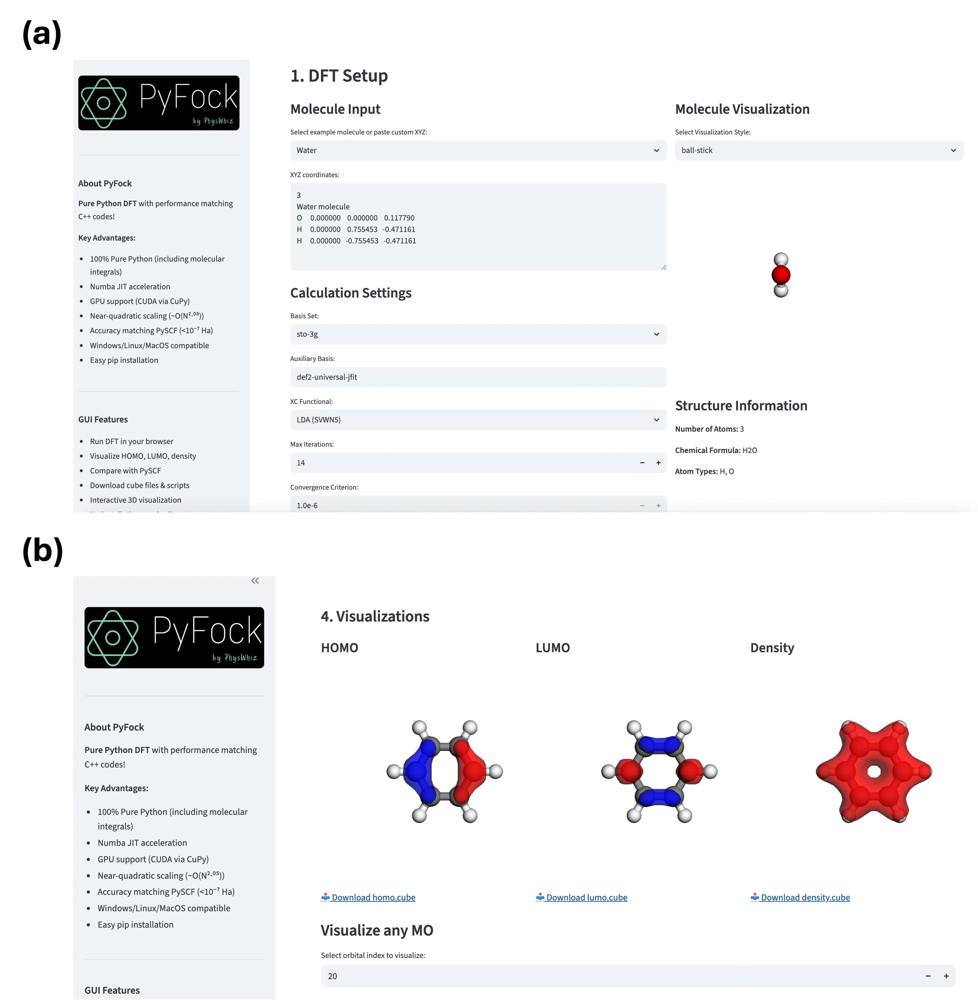
Pure-Python DFT code with molecular integrals and exchange-correlation terms, designed for easy installation and transparent workflows.
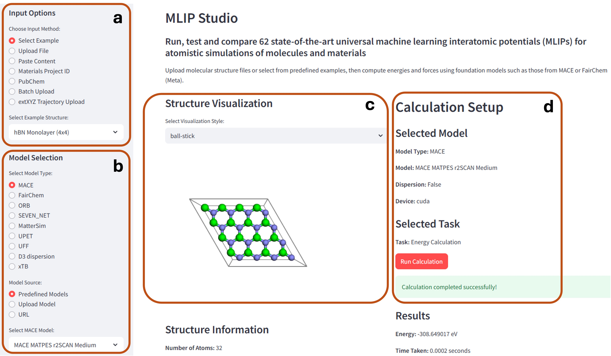
No-code platform to run, test, and compare more than 60 machine-learned interatomic potentials for molecules and materials.
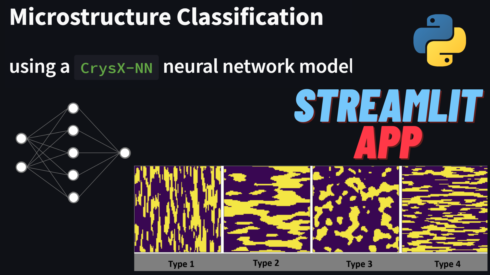
Efficient neural network library written from scratch with support for parallelization and GPU workflows.
Quantum chemistry utilities
Small tools built to reduce friction in common computational chemistry and materials simulation tasks.
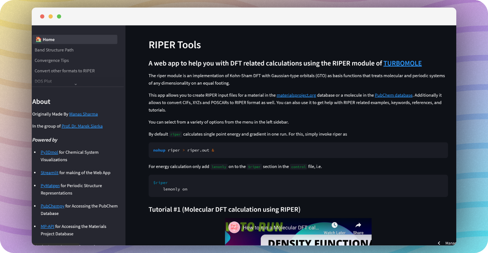
Create RIPER input files for TURBOMOLE from CIF, XYZ, POSCAR, Materials Project, and PubChem sources.
Open tool
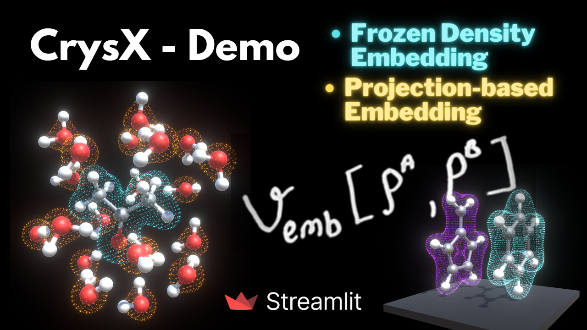
Online demonstration of frozen-density embedding and projection-based embedding ideas.
Read and run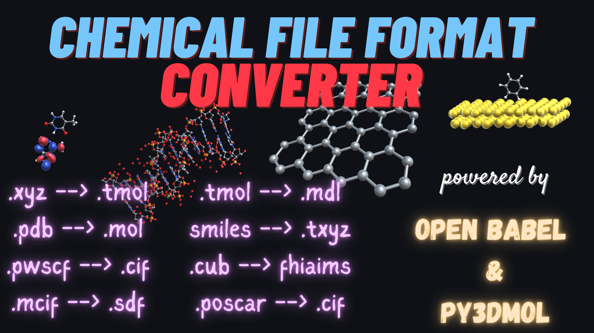
Inter-convert common chemical file formats including CIF, XYZ, POSCAR, mol, and mol2.
Open article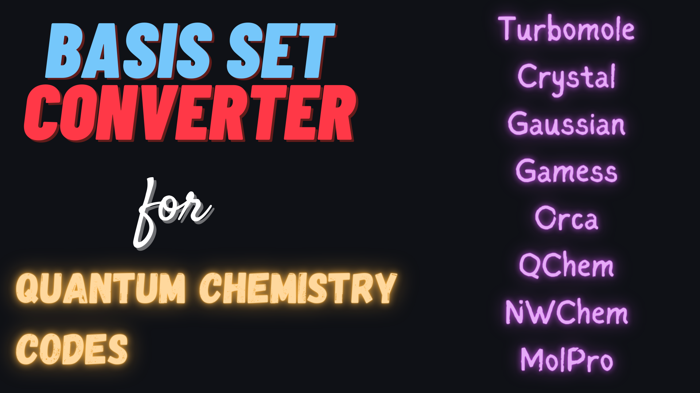
Convert basis sets among Gaussian, TURBOMOLE, NWChem, and related formats with Basis Set Exchange data.
Open articleOnline GUI for VASP input preparation and parsing or visualizing VASP output files.
Project hubVisualization and Android
Molecule, crystal, crystallography, augmented reality, and education-focused tools.
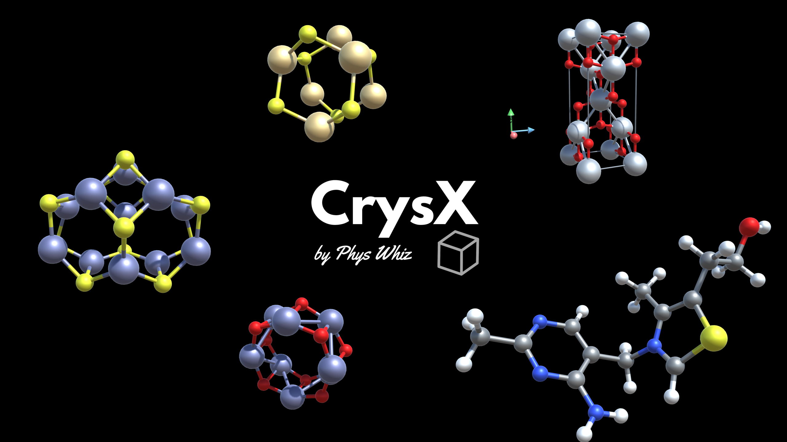
High-quality molecule and crystal viewer using complex Unity shaders, available across major platforms.
Project page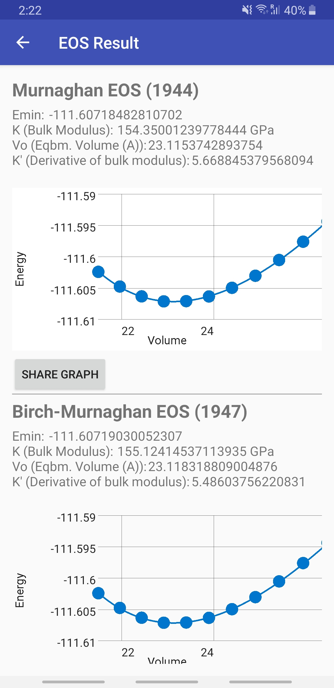
XRD simulation, CIF parsing and creation, equation-of-state fitting, and related crystallographic utilities.
Google PlayAugmented-reality visualization of molecules and crystals through the device camera.
Google Play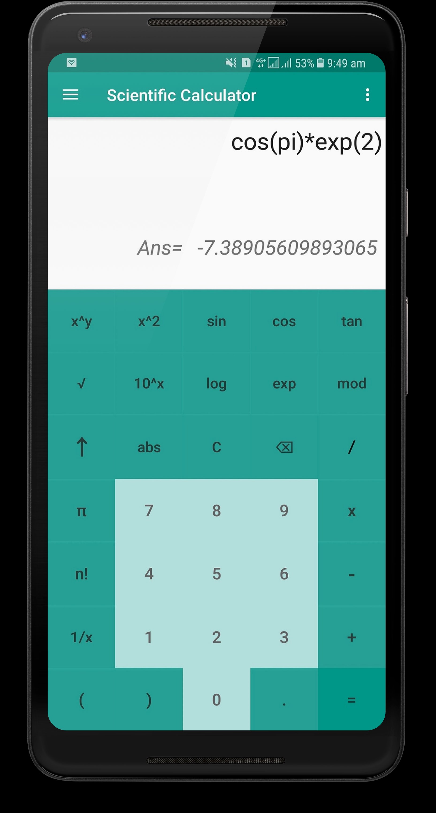
Mathematical tools for science and engineering students, designed as a mobile substitute for desktop math software.
Google PlayCrysX-NN demonstration model trained to classify materials microstructures from image input.
Open article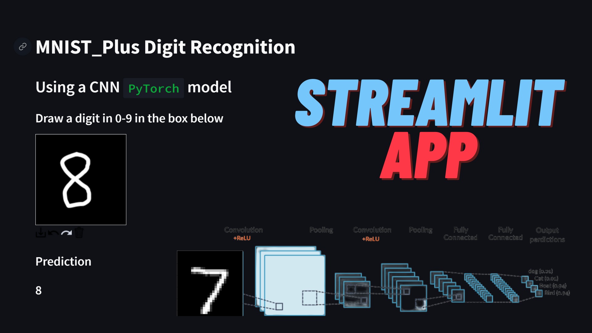
Convolutional neural network app that classifies handwritten digits drawn by the user.
Open articleTechnical stack
Scientific programming, web development, package workflows, and visualization tools from the CV and PDF.